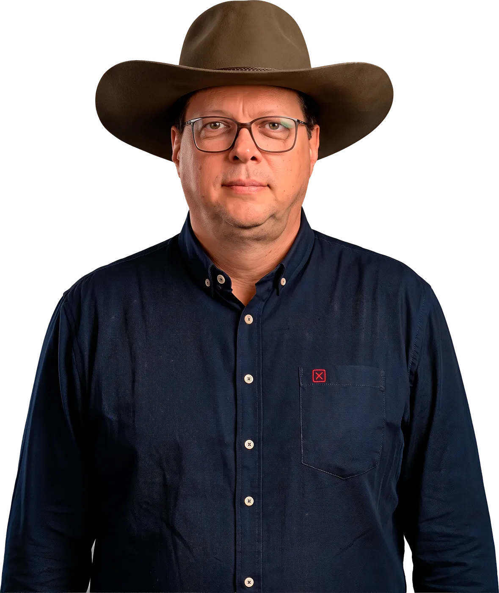
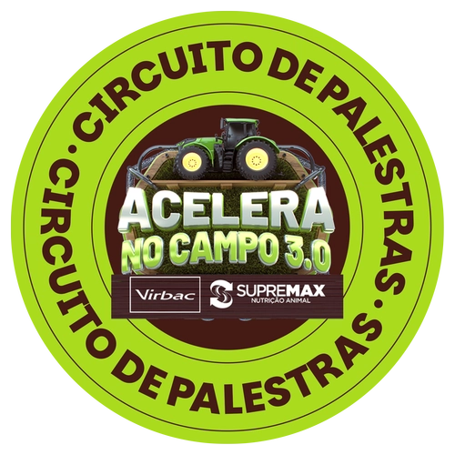
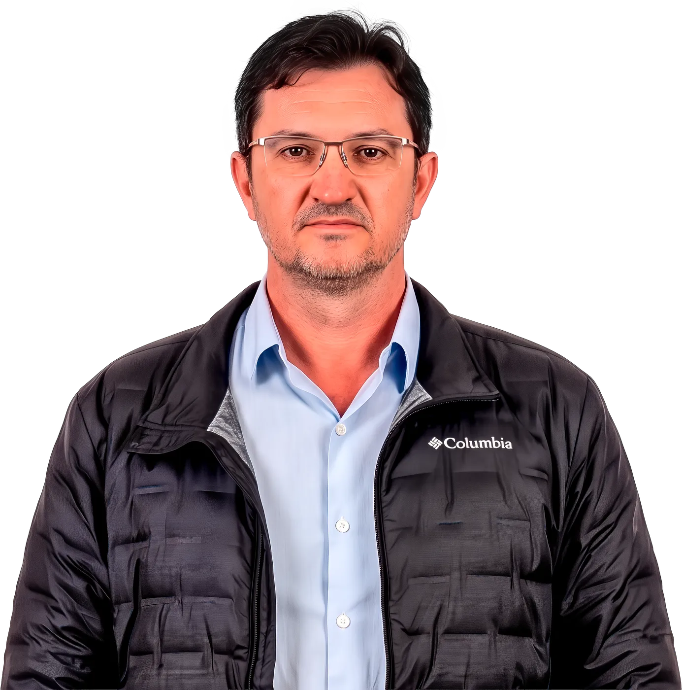
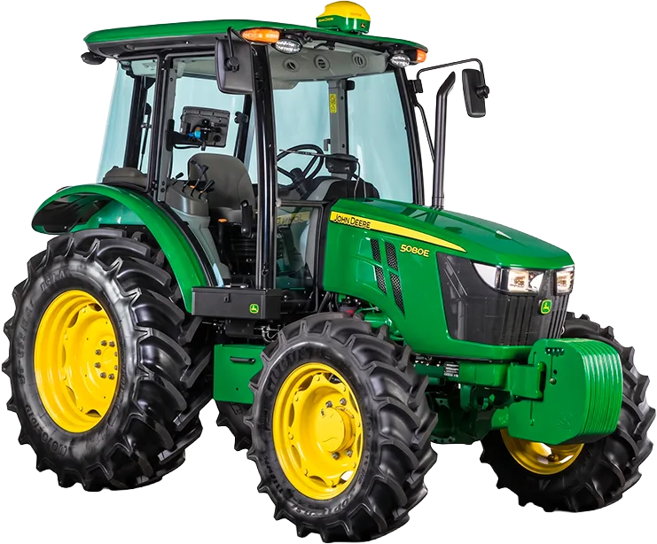

RicardoArantes
- Zootecnista
- TRI Comunicação
Palestra:
Desafios do Agro Moderno: você está preparado?

Circuito de Palestras · Outubro de 2026 · Rondônia
Conhecimento para acelerar os resultados no campo.
Quem sobe ao palco

Palestra:
Desafios do Agro Moderno: você está preparado?

Palestra:
Controle sanitário na reprodução: estratégias para otimizar a rentabilidade na cria
Terça-feira13 de Outubro
Às 19h
Quarta-feira14 de Outubro
Às 19h
Quinta-feira15 de Outubro
A partir das 8h
Sábado17 de Outubro
Às 10h30
A vaga é confirmada pelo link pessoal que você recebe de um colaborador da Nossa Lavoura.
Um colaborador da Nossa Lavoura envia o seu convite pelo WhatsApp.
Cada link vale para você e um acompanhante.
No dia, apresente o ingresso na entrada, direto do celular.
Ainda não recebeu o seu? Fale com o consultor da loja Nossa Lavoura mais próxima.
Já confirmei · ver meu ingresso
E continue acelerando: a cada R$ 500 em produtos Virbac ou R$ 2.000 em produtos Supremax, você ganha 1 cupom para concorrer a um Trator
John Deere 5080E.
Acelere conhecimento.Acelere resultados. Acelere no Campo.
Certificado de Autorização SPA/ME nº 06.049607/2026. Promoção "Acelera no Campo 3.0", válida de 01 de maio a 30 de novembro de 2026. A cada R$ 500 em produtos Virbac ou R$ 2.000 em produtos Supremax, o participante recebe 1 cupom para concorrer ao sorteio de 01 Trator John Deere 5080E. Consulte o regulamento completo e as condições de participação em nossalavoura.com.br. Imagens meramente ilustrativas.